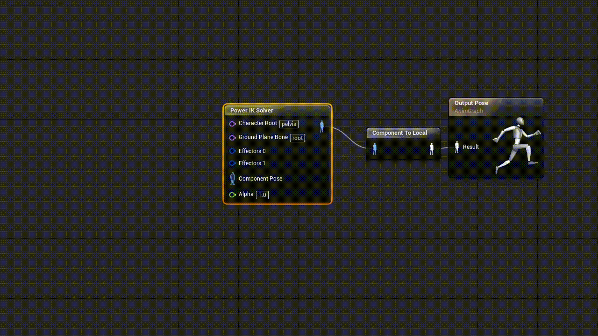
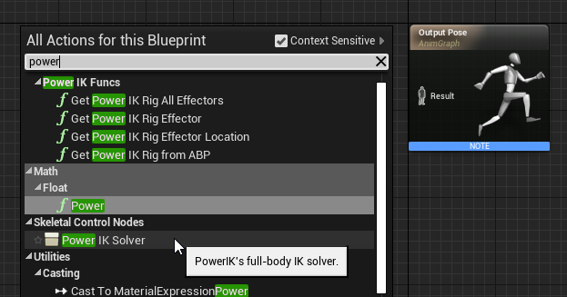
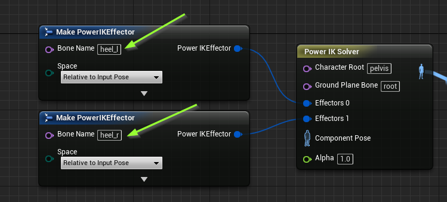
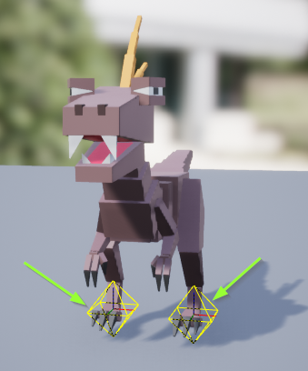

Power IK Solver Node
What Is a Power IK Solver?
The core of the plugin is the Power IK solver Animation Graph node.
It takes an input pose and a list of effectors. The effectors come with target transforms corresponding to joints in the skeleton.
Translating or rotating an effector pulls the affected joint, with its surrounding skeleton, towards the effector transform. The solver calculates the pose to reach the affected bones towards the new set of locations.

Basic Solver Setup
-
Right-click in your animation graph and create a Power IK Solver node.
 -
Set the name of the Character Root and Ground Plane Bone. See the Bone Name Settings for explanations of these fields.

-
In the details panel, click the “+” icon to add as many effectors as you need.

-
Right-click on the Power IK Solver and click Refresh Node to make the effector pins visible in the graph.

-
Drag off the pins to create Power IK Effector nodes. Set the Bone name of the effectors. Typically these are foot joints, but they can be any bone in the body.
 -
Connect the input pose and the output pose to the solver node.

-
Compile the animation blueprint. Select the solver node. If everything is setup correctly, you should see yellow diamonds where your effectors are located.

From here you are ready to drive the effector positions and rotations to pull the skeleton as desired. See the section on Power IK Effectors for more info.
Note on Blueprint Preview Window
The Power IK solver node will not affect your skeleton in the animation blueprint preview window. Typically, the effector inputs require runtime information. So the solver evaluates only while playing in editor, or in a final build.